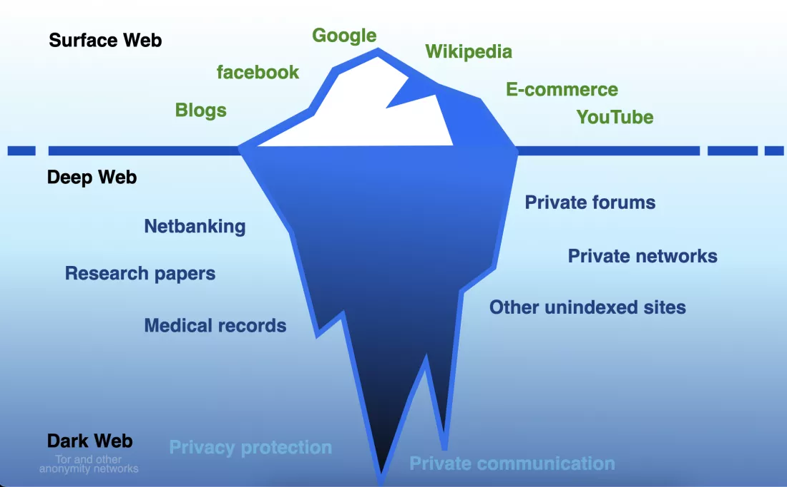
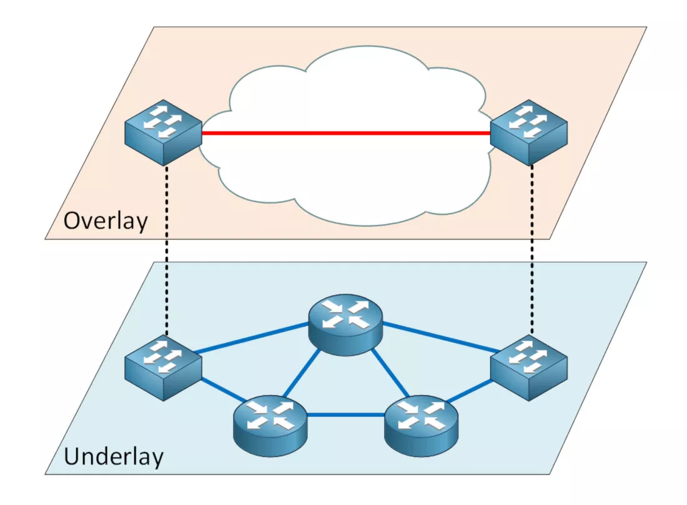
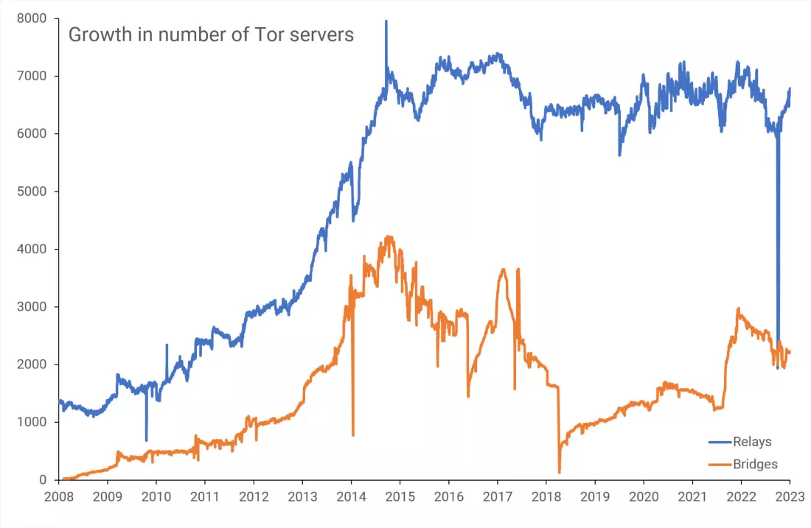
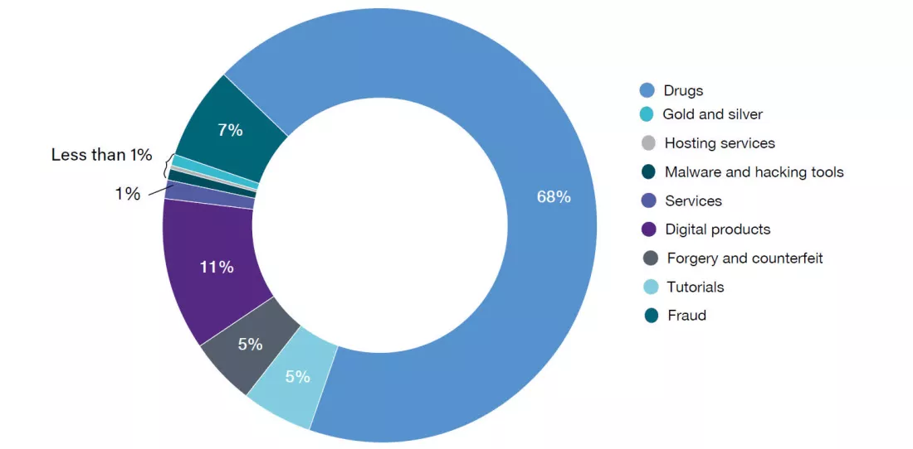
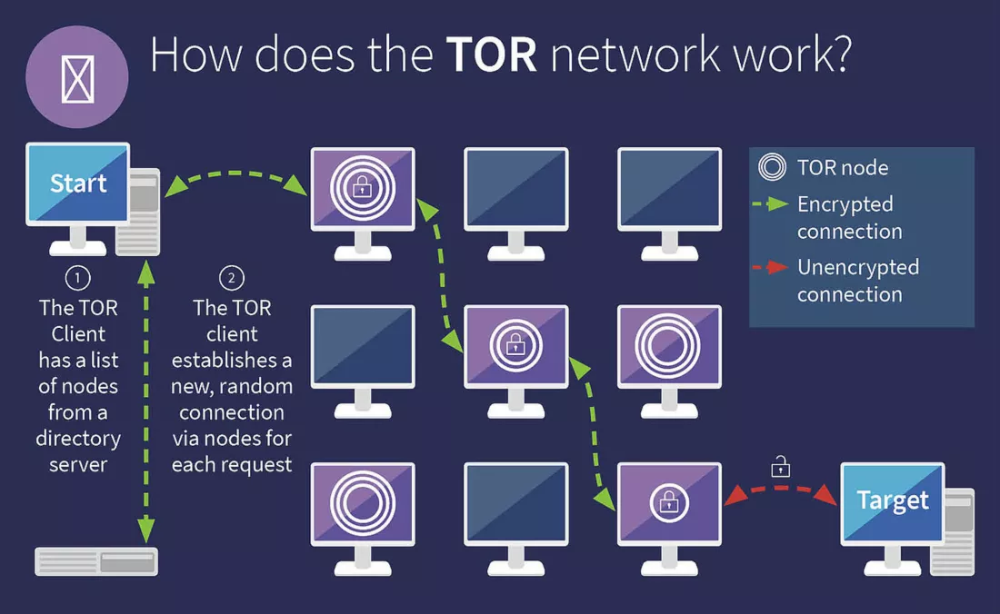

The Dark Web: Exploring the Hidden Internet
In the realm of the Internet, few things carry as infamous a reputation as the Dark Web. Widely utilized for cybercrime, theft, money laundering, terrorism, and human abuse, it remains the target of countless authorities and agencies, all vying to catch its criminal users and curb its usage. Paradoxically, the very foundation of the Dark Web was developed by the US military and made accessible to the public, free of charge.
Welcome to the Dark Web – a truly seedy and sinister corner of the web, or could it also be a tool for freedom and civil rights? Let's find out...
TL;DR: What is the Dark Web?
The Dark Web is a network of websites that operate on an encrypted layer of the internet, inaccessible to standard web browsers. It's predominantly accessed via Tor or I2P. These networks anonymize user data by routing it through multiple servers worldwide, encrypting it at each stage (known as 'onion routing'). This makes both the origin and content of the data difficult to trace.
Websites on the Dark Web use ".onion" or ".i2p" top-level domains and are not indexed by standard search engines, providing an environment of increased privacy and anonymity.
Surface web, deep web, and dark web
The Internet is a worldwide network of computers as you're likely already aware. Among the many data systems utilizing this network is the World Wide Web (WWW). When you use a web browser to visit a site like TechSpot, your computer is requesting files hosted on a remote machine, somewhere else on the planet.
A multitude of machines seamlessly handle this process for you – connecting you to the appropriate server, transferring the files your browser requests, and so on. You can locate any of our web pages, along with billions of others, because they are publicly accessible and have been indexed by the likes of Google.
This accessible segment of the web is widely referred to as the Surface Web, yet it constitutes just a small fraction of the total data accessible through the Internet. The remainder, which isn't indexed, is often termed the Deep Web.
Deep Web data is relatively hidden, but not invisible – for example, cloud storage and online banking services, as well as web-based email, government, and other agencies are all located within the Deep Web. If you know the exact location of it, via its URL or IP address, then you can easily get to it, though it's likely to be kept secure with passwords or some kind of payment system.
This kind of content isn't indexed because the computers that host the data block automated programs, known as bots, from trawling through the sites, as part of the indexing process. It doesn't necessarily mean the computers contain anything illegal or are being used for anything nefarious (they are, after all, perfectly visible on the Internet) – it's simply a matter of improved security and privacy.
However, there are Internet users who take these privacy measures to an extreme level, employing a highly private network of computers that can only be accessed using the appropriate software. Moreover, the locations and login credentials are exclusive knowledge to specific individuals.
The content hosted on these machines is collectively referred to as the Dark Web.
Darknets: hiding in plain sight
Since the Surface Web is so accessible, as is the majority of the Deep Web if you know where to look, you might be wondering how exactly one can completely hide a collection of servers that ultimately still connects to the Internet.
It's achieved by the use of overlay networks (groups of computers that use another network to communicate through) that can only be accessed through the use of specific software, networking protocols, or exclusive authorization.
Specific versions of these systems are typically labeled as darknets and are used to do things like peer-to-peer file sharing. However, the use of a darknet itself doesn't mean that everything is hidden – accessing one from your home ISP account will leave an identifiable trace back to you.
The Dark Web comprises a multitude of darknets that are employed to host so-called anonymous proxy networks – these use multiple servers acting as relays, transferring data from machine to machine, and encrypting the transactions as they come and go. The more relays used, the harder it becomes to track everything within the darknet.
One of the most well-known systems that do this is called Tor and it's named after the technology itself: The Onion Router. Onion routing was initially developed by the US Naval Research Laboratory in the mid-1990s, as a means to protect intelligence transmissions across the Internet, through the use of multiple encryption layers (hence 'onion'). The code was eventually released under a free license and soon lots of projects started appearing based on it (Tor just being one of them).
Servers in Tor's darknet are owned and run by volunteers, and currently number in the thousands, all across the globe. Some are publicly listed (relays), whereas others aren't (bridges), and get used by millions of people every day.
What the Dark Web is used for
The first thing to note here is that accessing content located within the Dark Web isn't illegal, in most countries at least – the exceptions being those that monitor and heavily police all online activities, regardless of what part of the Web it's in.
Having a very secure and private network, which actively tries to keep its users as hidden as possible, is going to be of use to numerous government bodies, as well as individuals needing protection, such as political dissidents and whistleblowers, or simply just users who wish to keep their digital content as private and safe as possible.
In countries where simply expressing an open view critical of governing policies, could lead to arrest and far worse, the use of darknets offers one of the few means of safely communicating with others. It does mean, though, that conspiracy obsessives, those far beyond the likes posting wild ideas on social media, are also frequent users of these hidden networks, usually from being repeatedly banned from public websites in the Surface Web.
And the very nature of the Dark Web also makes it ideal for those wishing to carry out illegal activities or store content that's far more serious and illegal in all parts of the world.
Data that has been stolen, counterfeit money, forged documents, credit card and social security numbers are all typically sold by people frequenting the Dark Web. Sites selling cheap pharmaceuticals sit side-by-side with those offering firearms, narcotics, or pornographic material involving minors.
In recent years, offers of cybercrime services have risen in number, as ransomware attacks have targeted ever-larger companies, and hacking groups routinely use darknets to discuss targets, share software, and so on (though sometimes to the benefit of the law).
It is these that give the Dark Web its reputation and it's not hard to see why.
Accessing the Dark Web
It's worth noting that one cannot simply stumble across any of the above, simply by logging on to your home Internet account and using a regular web browser. In the case of the latter, something like the Tor Browser is required to access content within the Dark Web.
This program can be used just like any other browser, but its "hidden services" features allow users to access the whole Web, without revealing their location or other identifying traits. It's used by thousands of people, every day, for perfectly sensible and legitimate reasons.
Tor isn't a VPN (Virtual Private Network) but it does use multi-layered encryption for all data transferred in browsing sessions and can access the Tor Network, which other browsers can't do. This is a collection of thousands of servers, across the globe, maintained by anonymous volunteers. Just as the servers that host TechSpot are a tiny part of the Surface Web, the Tor Network is a small part of the Dark Web.
Now, while some authorities use Tor themselves for managing the transfer of covert information, many others view anyone who uses the program with deep suspicion. And given the nature of some (many?) of the users of the Dark Web, any attempt to use the Tor Network should be done carefully – so that means taking your online privacy and security as seriously as possible.
One approach is to use an old computer, that's not your main machine, and run it with something like the Tails operating system. This portable Linux distribution is designed to run directly off a USB flash drive and comes with Tor pre-installed. In other words, you boot the computer using Tails, rather than Windows, for example.
Next, if you want to ramp up your privacy further, don't use your home ISP. Instead, connect to a public WiFi hotspot but as these aren't very secure, using a VPN before firing up Tor is an absolute must.
It's somewhat obvious to say this, but it's still worth repeating – don't use your own name or email address. Randomized, throwaway accounts are vital for ensuring you're not leaving a trail back to your personal details. And while GB of free files might seem enticing, there's a good chance that they're simply carriers for malware, so don't download anything unless you're 100% certain of the file's integrity and origins.
Practical (and legal) uses for the Dark Web
As noted, although the Dark Web can be a place for illicit activities, you may also leverage it in responsible and ethical uses, in compliance with local laws and regulations.
- Privacy-focused Email Services:
- ProtonMail, a Swiss-based email service, is accessible on the Dark Web to avoid censorship and provide an encrypted email service. It's ideal for those wanting to communicate confidentially.
- Whistleblowing:
- Platforms like SecureDrop allow anonymous information-sharing, and it's used by journalistic entities including The Guardian and The New York Times for secure communication with whistleblowers.
- Facebook:
- Facebook has a presence on the Dark Web, letting people access the platform from areas where it's blocked or censored. It's useful for people living under oppressive regimes. DuckDuckGo is also available in the Dark Web as a tracker-free search engine.
- Privacy and Freedom Advocacy:
- The Tor Project uses the Dark Web for its site to provide information about internet privacy, security, and freedom from surveillance.
- Cryptocurrency Transactions:
- Bitcoin and other cryptocurrencies can be transacted over the Dark Web, providing an extra layer of anonymity to users. This can be useful for people living in countries with strict financial controls.
- Internet Freedom in Oppressive Regimes:
- For people in countries with strict internet censorship, the Dark Web can be a lifeline, providing access to uncensored news and the ability to communicate freely with the outside world. Sites such as the BBC and ProPublica are available in the Dark Web.
A cautionary note to end with
For some people in the world, using the Tor Network or similar networks is the only way they can safely access the Internet, without immediate reprisals from oppressive regimes. Without the existence of the Dark Web, the general public would have less knowledge about the machinations of governments and corporations or crimes committed in conflicts.
But for all the positive aspects of the Dark Web, the name is now ever associated with serious crime, in the eyes of most governments. With the worldwide cost of cybercrime estimated by some to reach $10 trillion in just a few years, and large-scale agencies heavily focusing on combating the use of the Dark Web, even the most legitimate users may find themselves being targeted.
So by all means, download Tor and explore the hidden world of the Dark Web, but just remember who else uses it and why.